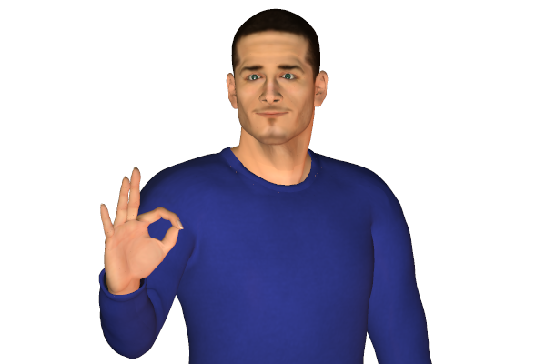
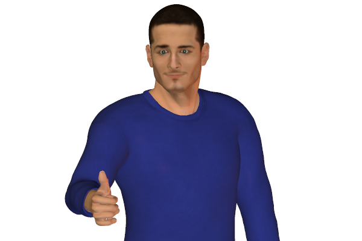
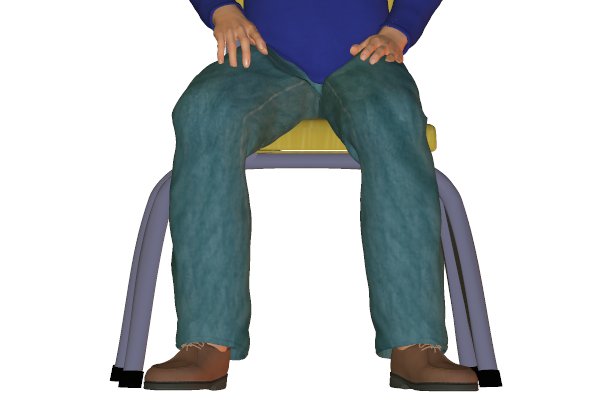
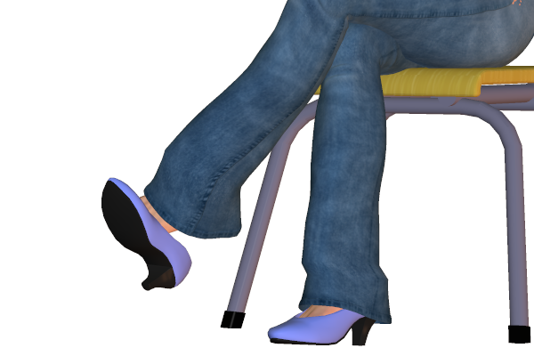
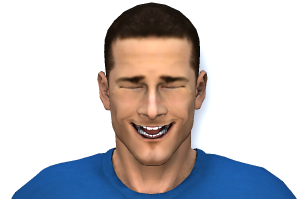
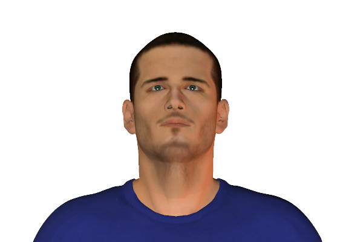
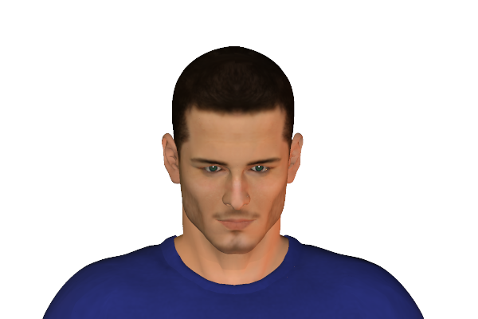
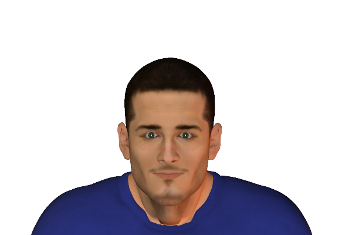
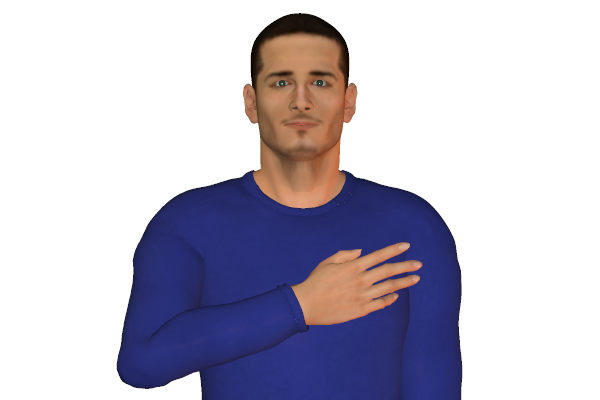

Bookmark added
-
index finger and thumb touching at tipssatisfaction, 'OK'This is gesture is understood as an 'OK' signal most commonly.
-
thumb(s) uppositive approval, agreement, all wellThis signals a positive gesture. It generally is in agreement to what has been indicated.
-
handshake - equal and verticalnon-threatening, relaxedMostly handshakes are like this when no one is trying to take control.
-
uncrossed legs, sitting - generalopennessOpen uncrossed leg positions indicate an open and relaxed attitude.
-
shoe-play(female)relaxation, flirting, sexualA sign usually seen in women. This indicates a feeling of relaxation or a sexual feel.
-
laughterrelaxationA genuine laugh is a sign of feeling at ease. Real laughter can affect the upper or the entire body. Pain and stress reduces while laughing.
-
head noddingagreementHead nodding occurs as a response while listening. It also indicates agreement
-
slow head noddingattentive listeningSlow nodding can be faked as well. One has to be careful to validate this sign. It can be interpreted as agreement.
-
head forward, uprightinterest, positive reactionLeaning towards the front indicates interest. Generally the forward leaning of the upper body commonly while sitting.
-
hand(s) on heart (left side of chest)seeking to be believedThe sender of this gesture uses this to convince anyone about his innocence or truthfulness.